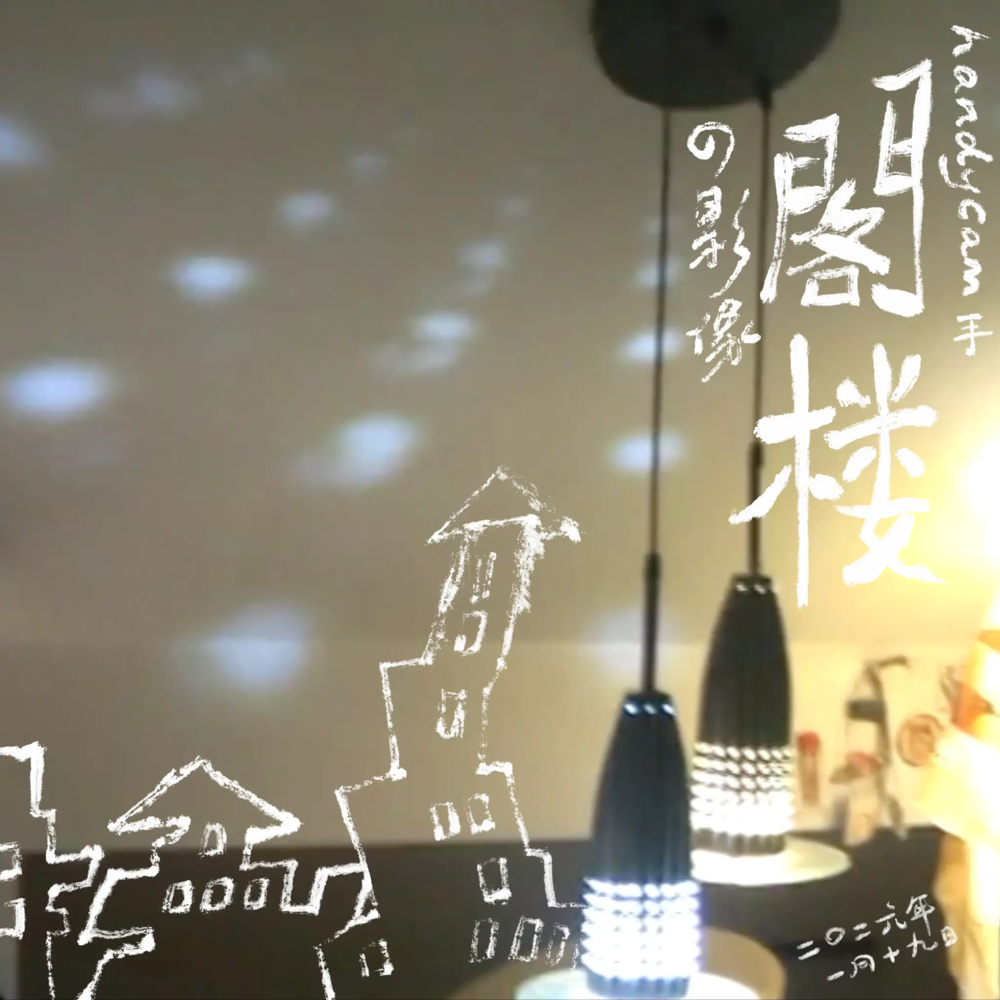
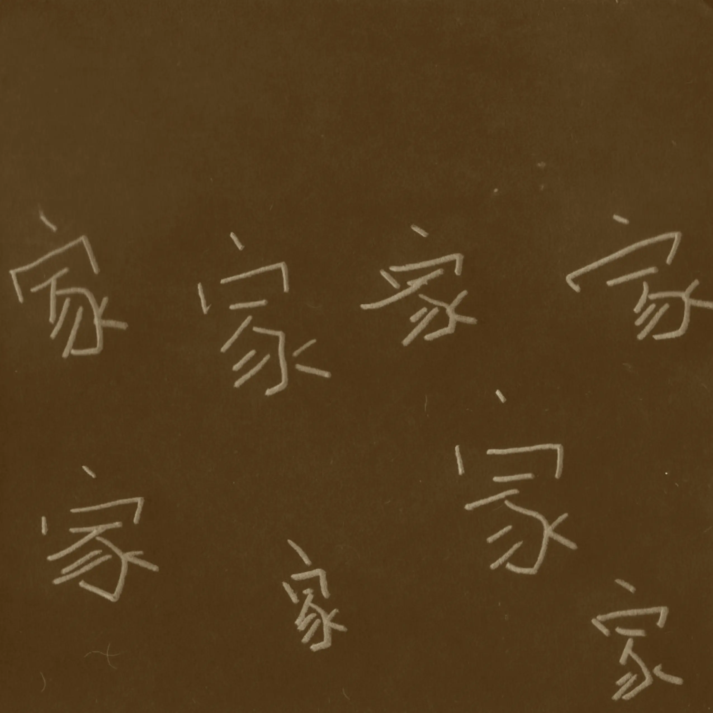

Album#51
阁楼的影像 & 家


专辑信息
- 专辑名称： 阁楼的影像
- 歌手： handycam
- 年份： 2026-01-20
- 时长： 約 55 分鐘



专辑信息
- 专辑名称： 家
- 歌手： handycam
- 年份： 2026-06-29
- 时长： 約 60 分鐘
在 HOPICO 的 我把 2026 最爱的三位女歌手请来同台演出！陈静琳x汪川xjody 裡，汪川 邀請了 handycam 來給她當樂隊，於是認識了這支樂隊，就把他們的專輯都找來聴了聴 (有時就是這樣發現新音樂的，喜歡一個音樂人，當他提到一些他喜歡的音樂人就去找來聴聴)。
截止到現在，2026 年 handycam 發布了三張專輯，還有兩張 live。其中《阁楼的影像》和《家》這兩張在聴感上我覺得是相近的，像是樂隊成員們輕鬆自在的窝在一個地方，隨意地演奏著一些他們喜歡的旋律，一起開心地玩。歌曲大多都是器樂演奏，聴起來有些 Jazz 的元素，偶尔能聴到他們之間一些隨意的對話、即興的哼唱，總之聴著蠻讓人放鬆的。曲子的名字也很有趣，像是「宁静的夜空调漏水」、「什么爵士尽是些靡靡之音」、「冲进厨房抓住一条克苏鲁章鱼」、「土老冒进行曲」。
如果你喜歡這樣的風格，也許你也會喜歡 Album#24 - 无尽的夏天。